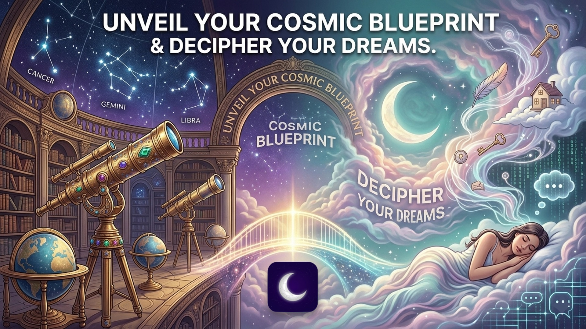
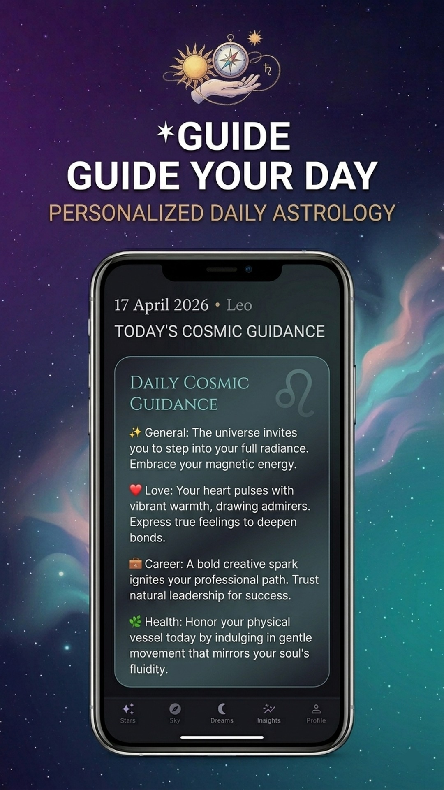
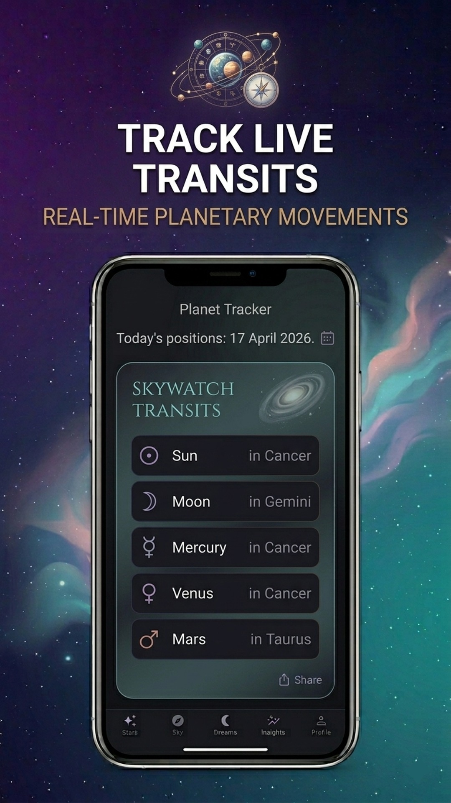
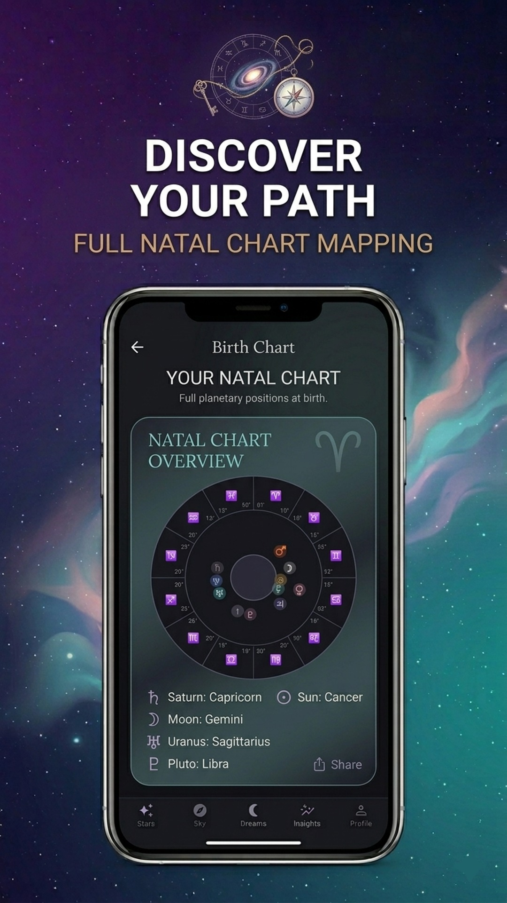
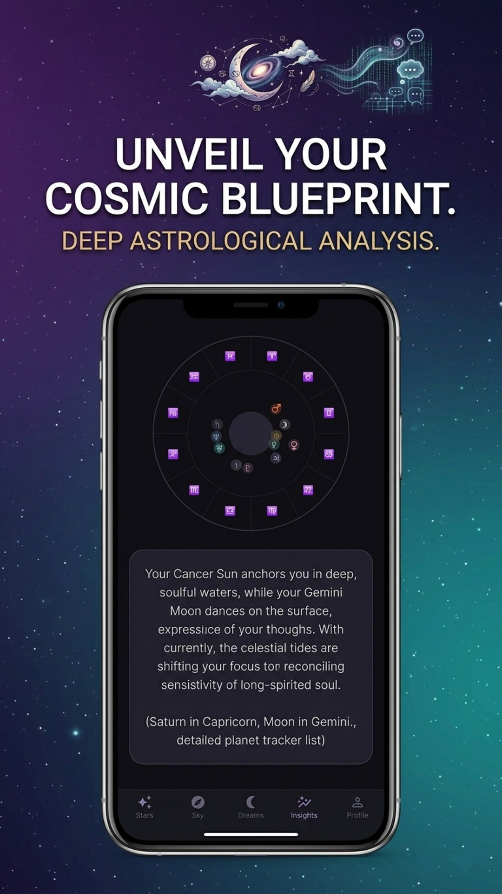
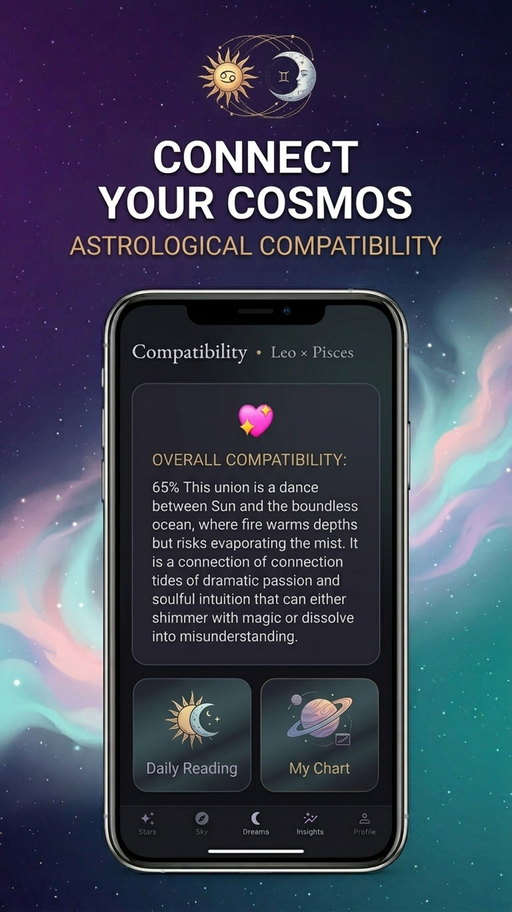
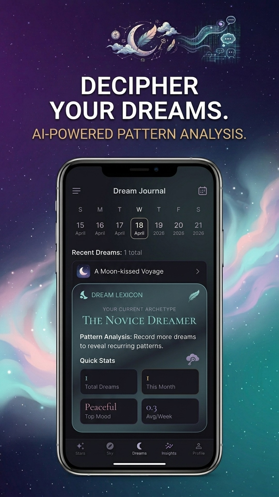

✨
Personalized daily astrology
Guidance for general energy, love, career and health.
Celestia combines personalized daily astrology, full natal chart mapping, live planetary transits, compatibility insights and AI-powered dream analysis in one elegant cosmic companion.

Read daily guidance, map your birth chart, track the sky and explore recurring dream patterns.
Guidance for general energy, love, career and health.
Explore planetary positions and your complete cosmic blueprint.
Follow celestial movements and key planetary placements.
Explore how two signs connect through personalized analysis.
Decipher recurring symbols, moods and patterns across dreams.
Record dreams over time and build a lasting personal archive.
Promotional images supplied by the Celestia app owner.






Download Celestia on Android and begin a more personal journey through astrology and dreams.
Get Celestia on Google PlayCelestia combines personalized astrology, natal charts, planetary tracking, compatibility and AI-powered dream analysis.
Yes. Celestia provides full natal chart mapping and planetary placement insights.
Yes. The dream journal and AI analysis highlight patterns, symbols and recurring themes.
Celestia is available on Google Play for Android.